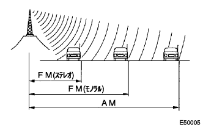
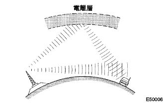
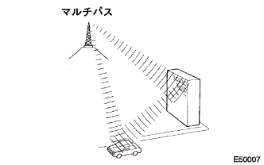
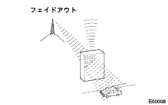
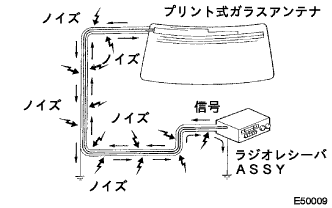
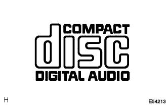
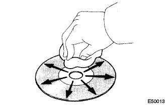

Audio system function explanation |
The frequency of the radio used in radio broadcasting is as follows.
|  |
There is a considerable difference in the size of the service range of AM and FM monaural service, and even if the AM can be clearly received, the FM stereo broadcast may not be received.In addition, FM stereo not only has the smallest service range, but also makes noise and other interference ("fajiting noise", "multi -pass noise" "fade out").
Fajing noise
|  |
In addition to electrical interference, AM broadcasting is easy to receive other interference, especially at night.At night, the AM radio waves reflect on the ionization layer, and the reflected radio waves occur in the way of the radio waves emitted from the same broadcasting station that reaches directly to the vehicle antenna.This interference is called "fajing noise".
Multi -pass noise
|  |
The interference caused by the radio wave reflected in obstacles is called "multipus".The multi -pass occurs when the signal emitted from the broadcasting station antenna reflects on the building or the mountains and gets in the way of the signal that is received directly.This interference is called "multi -pass noise".
Fade out
|  |
FM radio waves are higher than AM radio waves, so they reflect on obstacles such as buildings and mountains.For this reason, when the vehicle is shadowed by buildings or obstacles, the FM signal gradually disappears or weakens.This phenomenon is called "Feedout".
Questions for noise
It is very important to understand your complaints well in making noise trouble shooting.Therefore, use the question table below to correctly diagnose the problem.
| Broadcasting method | Interview content | Estimated cause |
|---|---|---|
| AM | Noise occurs in certain places | There is a high possibility of outpatient noise. |
| AM | Noise occurs when listening to a hard -hearted broadcast | The same program may be broadcast from each regional broadcasting station, and if the program is the same, there is a possibility that customers are listening to different broadcasting stations.Especially in the case of NHK, these mistakes often occur. |
| AM | Noise occurs at night | It is highly likely that the radio wave from a distant broadcast. |
| Fm | Noise occurs in a specific place while driving | There is a high possibility of multi -pass noise and fajing noise caused by FM frequency changes. |
Points to note when confirming
The noise in the radio has been prevented, so there is no harm to the actual use, and there is almost no large noise.If you have a very large noise on the radio, make sure that the ground where the antenna is attached is normal.
To see if all the regular noise prevention parts are installed correctly, attach external products, or do not use regular wiring.
If you do not match the radio channel (do not synchronize with the broadcast), the noise will be noticeable, making it easier to judge the phenomena.
Antenna and noise
|  |
The electric signal received by the antenna is transmitted to the radio through the coaxial cable core wire.Noise waves other than radio waves enter this core wire, causing noise on the radio to worsen the sound quality.To prevent the noise from entering the radio, the coaxial cable coaxial cable is covered with a mesh wire called a shield wire.This shield wire prevents noise from entering by flowing noise to the ground.
Disk used
|  |
This player can use only the music CD with the mark in the figure.
cleaning
|  |
The bearing of the CD is a soft and dry cloth such as a plastic glasses wiping, and is lightly wiped from the center to the outside of the radial direction and cleaned.
The audio system has been communicated between devices only by AVC -LAN only when connecting to a dealer equipped equipment.
AVC -LAN's master is radio receiver ASSY, which contains resistance required for communication (TX + terminal ← → TX -terminal 60-80Ω) inside the radio receiver ASSY.
In the AVC -LAN circuit, if a disconnected or short occurs, the audio system will not work properly due to the interruption of communication.
The audio system has a diagnostic function (displayed on the Radio Recever ASSY liquid crystal display).
Each device that makes AVC -LAN has a three -digit number (notation in the hexadecimal number) called a device code (physical address).
Each function (unit) that constitutes the inside of AVC -LAN has a two -digit number called a logical address (notation in a hexadecimal number).